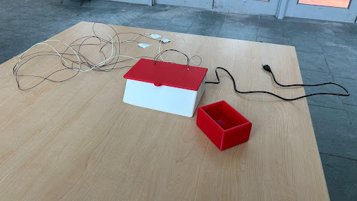
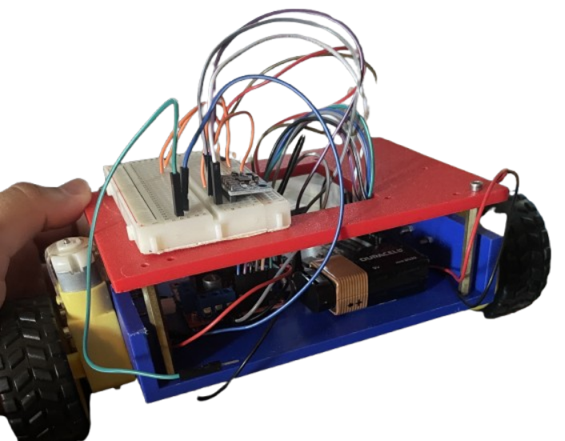

Experience
Trainer on Executive Board, Cornell Maker Club
Mar 2025 - Ongoing- Lead trainees through a 40 minute explanation of lab safety protocols and equipment locations
- Communicate in weekly meetings to discuss future plans for trainings and lab organization
- Answer questions and guide makers through labs, assisting with 3D printers, soldering equipment, and power supplies
ECE Subteam - Cornell Cup Robotics
Sep 2025 - Ongoing- Working on the SparkFun AgXRP using an XRP system. AgXRP will develop engineering and agriculture education in homes and classrooms. SparkFun sensors and a custom moisture sensor will be used for education.
- Writing firmware in MicroPython for different sensors, such as a temperature sensor from the SparkFun website.
- Using python and motors to control the amount of water entering the soil for a moisture sensor.
Projects

Electrocardiogram
Developed Differential Amplifer, Notch Filter, and Low Pass Filter. In connection with pennies as electrodes, a heart rate signal is recorded and your heart rate is supposed to be monitored in real time. Project was created for the Cornell 2025 Make-a-thon

First Tech Challenge (FTC) Robot
As a part of FTC Centerstage, developed a hanging mechanism, pixel collector, and paper airplane shooter utilizing a linear slide, 3D printed parts, servos, and other motors.

Self Balancing Robot
Created a self balancing robot utilizing an Arduino Uno, L298N Driver Module, an MPU6050, and 3D printed parts modeled on OnShape.